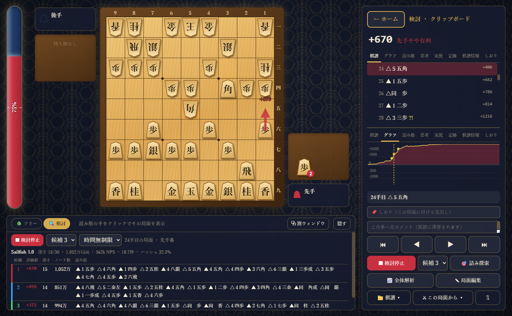
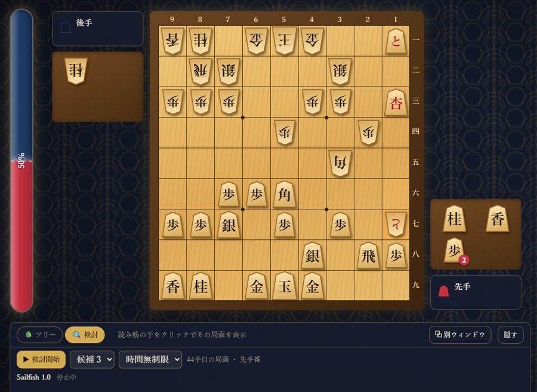
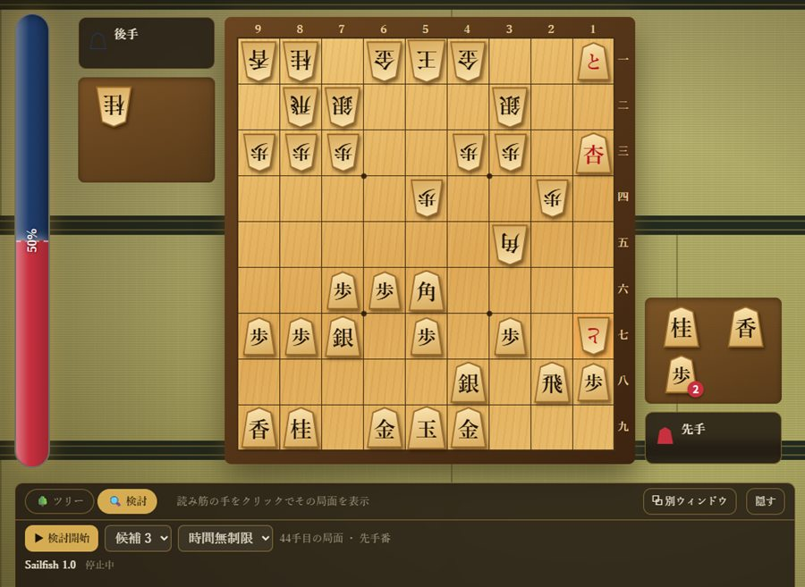
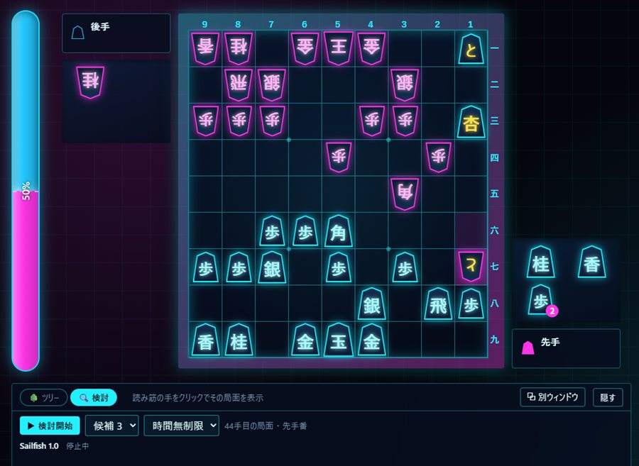
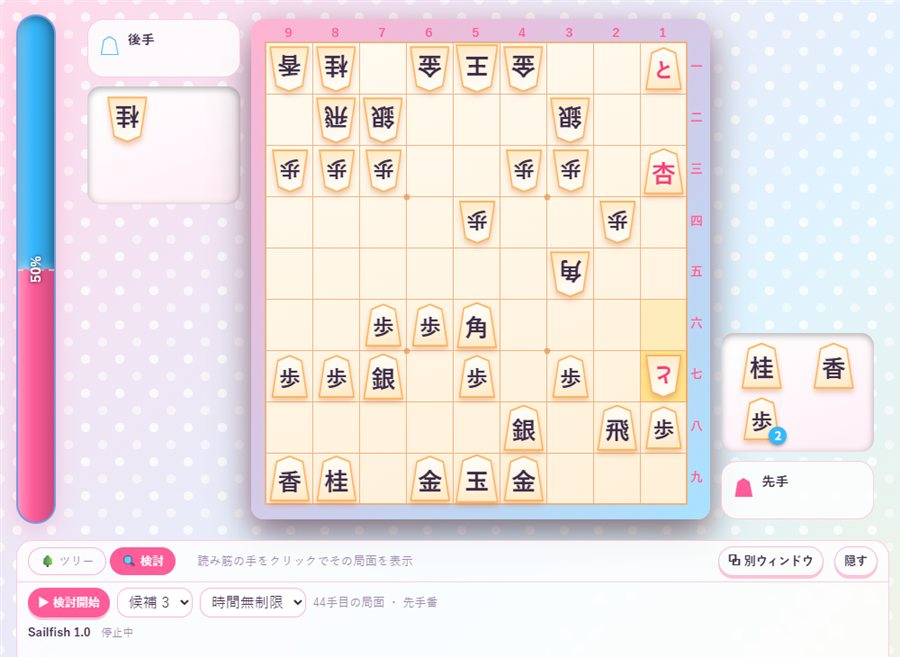
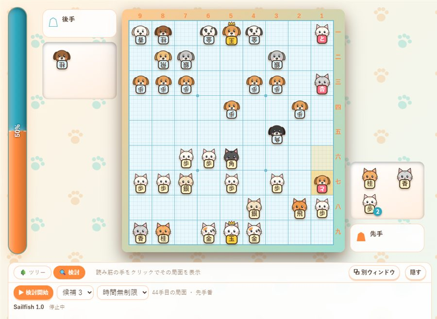
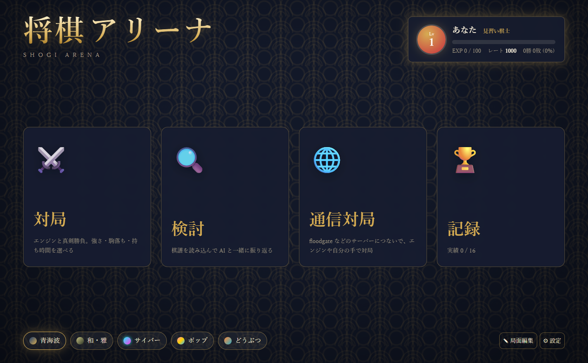

将棋アリーナ
ゲームのように遊べる、無料の将棋ソフト。
エンジンとの対局も、AI と一緒の検討も、通信対局も、これ 1 つで。

4 つの遊び方
起動したら、ホーム画面のカードから選ぶだけ。
対局
エンジンと真剣勝負。強さは 6 段階から選べます。
- 駒落ち 10 種・指定局面から開始
- 持ち時間・秒読み・加算・切れ負け
- 待った・ヒント・振り駒
検討
棋譜を読み込んで、AI と一緒に振り返れます。
- 評価値グラフ・候補手の矢印
- 悪手の自動判定・全体解析
- 詰み探索・分岐ツリー・定跡
通信対局
floodgate などの CSA サーバーにつないで対局。エンジンにも自分の手でも指せます。
記録
勝ち負けでレベルとレートが上がり、実績を集めるほどやりごたえが増していきます。
5 つのテーマ
盤も駒も背景も、気分に合わせていつでも切り替えられます。






見やすく、深く振り返る
- 評価値グラフと、形勢がひと目でわかるゲージ
- 最大 3 つのエンジンを同時に動かして意見を比べる
- 候補手を 最大 5 手まで矢印と読み筋で表示
- 緩手・疑問手・悪手・大悪手を自動で判定
- KIF / KI2 / CSA / SFEN の読み書き、変化（分岐）にも対応
- 盤の画像コピーや局面図の作成、SNS への共有にも便利
将棋エンジン Sailfish 同梱
インストールしてすぐ対局できます。もっと強い相手がほしくなったら、お好みのエンジンを追加できます。
Sailfish（セイルフィッシュ）
Rust で一から書いたオリジナルの USI エンジンです。機械学習に頼らない手作りの評価関数で、遊んで楽しい「ほどよい強さ」を目指しています。
ソースコードは MIT ライセンスで公開しています。
ほかのエンジンも使えます
USI プロトコルに対応した将棋エンジンなら、「設定 → エンジンを追加」で登録できます。水匠、やねうら王などをご自分でダウンロードして、対局や検討に使えます。
検討では、複数のエンジンを並べて読み筋を比べられます。
ダウンロードと始め方
Windows 10 / 11（64bit）で動きます。無料です。
- ダウンロード
下のボタンから、最新版のインストーラー（ShogiArena-Setup-…exe）を入手します。インストール不要の zip 版もあります。 - インストール
ダウンロードしたファイルを実行します。Sailfish は最初から入っています。 - 対局開始
起動したら「対局」を選んで、強さを決めて開始。はじめてなら「入門」がおすすめです。
よくある質問
本当に無料ですか？
はい、無料です。MIT ライセンスで公開していて、どなたでも自由に使えます。
Mac や Linux では動きますか？
いまは Windows（10 / 11、64bit）向けのみです。
将棋ウォーズの棋譜は読み込めますか？
将棋ウォーズの画面で棋譜をコピーして、将棋アリーナに貼り付けると読み込めます（「棋譜」→「貼り付け」、または Ctrl+V）。
不具合や要望はどこに伝えればよいですか？
GitHub の Issues からお知らせください。